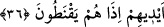

36. İnsanlara bir rahmet tattırdığımızda ona sevinirler. Şâyet yaptıklarından
ötürü başlarına bir fenalık gelse hemen ümitsizliğe düşüverirler.
“İnsanlara bir rahmet” nîmet, sağlık ve genişlik/zenginlik “tattırdığımızda ona”
hamd ve şükür ederek değil de şımararak ve arsızlık ederek “sevinirler.” Dünyâ hayatı
onları aldatır ve Mevlâ’ya kulluktan yüz çevirirler. “Şâyet yaptıklarından ötürü” yâni
işledikleri günahlarının uğursuzluğundan dolayı “başlarına bir fenalık” belâ ve
darlık/fakirlik gibi bir sıkıntı “gelse hemen ümitsizliğe düşüverirler.” Derhal Allah
Teâlâ’nın rahmetinden ümit keser ve ye’se kapılırlar. O zaman onlar ümitsiz olup âh u
figan ederler. Yâni ne nîmete şükrederler ne de mihnet ve sıkıntıya sabrederler. İşte bu,
mahcûb gâfillerin hâlidir. Muhabbet ve irâde ehli ise ister tabiatlarına uygun olana nâil
olsunlar, isterse onu ellerinden kaçırsınlar eşittir. Allah Teâlâ’nın: “Elinizden çıkana
üzülmeyesiniz ve Allâh’ın size verdiği nîmetlerle şımarmayasınız diye…” (el-Hadîd,
57/23) buyurduğu gibi onlar (böyle şeylere) sevinmez ve üzülmezler. Allah Teâlâ’ya
îtimadlarının güçlü olması sebebiyle zâhir ve bâtın rahmetten ümit kesmezler.
Tenezzülâtı/başlarına gelenleri telvînâttan görürler. Türlü riyâzat ve mücâhedelerle
hallerini düzeltmek sûretiyle Allâh’a dönerler. Temkîn ve terakkîler zuhûr edene kadar
sabrederler.
Ey gönül, sabret; ayrılık gününde başka şey fayda etmez
Tabip acı şerbeti fayda etsin diye yaptı
37. Görmediler mi ki Allah, rızkı dilediğine bol bol vermekte, dilediğininkini de
daraltmaktadır. Şüphesiz îmanlı bir kavim için bunda ibretler vardır.
“Görmediler” yâni bakmadılar ve müşâhede etmediler “mi ki” er-Rezzâk olan “Allah,
rızkı dilediğine bol bol vermekte,” yâni salâhını bunda gördüğü kimse için
genişletmekte ve onu şükür ile imtihan etmekte, “dilediğininkini de daraltmaktadır.”
Yâni hâlinin nizamını bunda gördüğü kimse için rızkı daraltmakta ve onu sabır ile
imtihan etmektedir. Bunu da kendisinin mâlumu olan onların şükür, nankörlük, sabır,